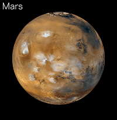

Mars
Click on Mars in the model to learn more!

God of War and Agriculture
Mars was the Roman God of war and Agriculture, given its name due to its bright red hue in the night sky. In recent history, Mars has garnered lots of attention due to its mild temperament and the high likelihood that Mars hosts liquid water. Most of Mars' water is found underground or frozen in its polar ice caps.
So far there have been 43 missions to Mars. These include multiple flybys, landers, and rovers from multiple countries here on Earth. So far, the majority of missions to Mars have ended in failure with 26 failures to 17 successes. In the future, NASA aims to send humans to Mars, however this will be extremely difficult and dangerous. There is no hard date set for such a mission.
Atmosphere and Temperature
Many Scientists think that 3.5 billion years ago, Mars' climate was very similiar to Earth's, wet and warm. However, due to Mars' size, it was unable to keep its atmosphere resulting in the evaporation or freezing of its waters. Mars is about 10 times less massive than Earth. The remaining atmosphere on Mars is extremely thin and composed mostly of Carbon Dioxide.
Temperatures on Mars may reach highs of 70 degrees Fahrenheit during warm seasons while they may go as low as -225 degrees Fahrenheit at the poles. For the numerous rovers and probes on Mars, temperatures are a serious issue. Probes and rovers routinely see temperatures as loww as -50 degrees Fahrenheit at night, with highs of 0 degrees Fahrenheit during the day.
Gravity
The gravitational constant on mars is 3.711 m's^2 compared to the 9.81 m/s^2 gravitational constant of Earth. This means that you would weight less than half of your Earth weight on Mars.
Moons
Mars has two extremely small odd shaped moons, Phobos and Deimos. The moons of mars are very small, being 22.2 and 12.6 km across respectively. Due to their small size, they do not have the gravity necessary to pull them into a spherical shape. It is thought that these moons began their lives as asteroids between Mars and Jupiter.